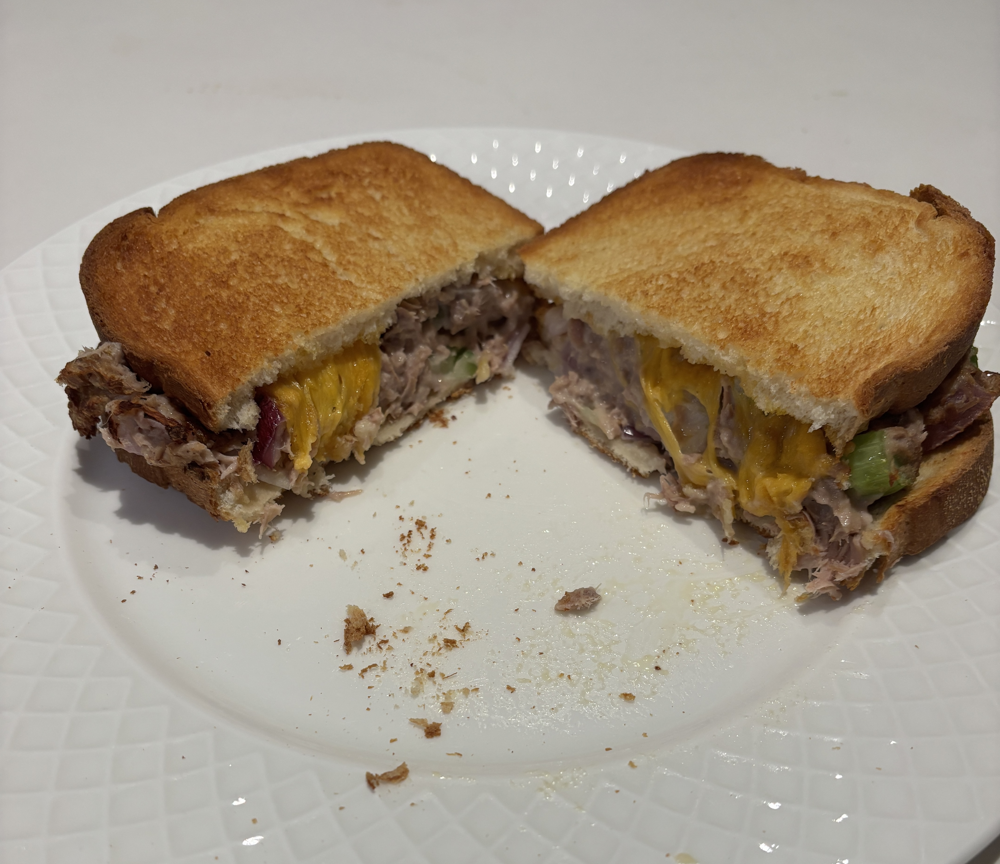

Home
Tuna melt

Ingredients
- Canned tuna
- Chopped red onions
- Chopped celery
- Mayo
- Sourdough bread
- Butter
- Cheddar cheese
Steps
- Combine the canned tuna, red onions, celery, and mayo into a large bowl to make tuna salad
- Butter the outside of two pieces of bread
- Fill the inside of the bread with the tuna salad and a slice of cheese
- Put it in the airfryer at 350 degrees for 7 minutes each side. Use a toothpick to keep the top bread from moving
- Cut in half and serve